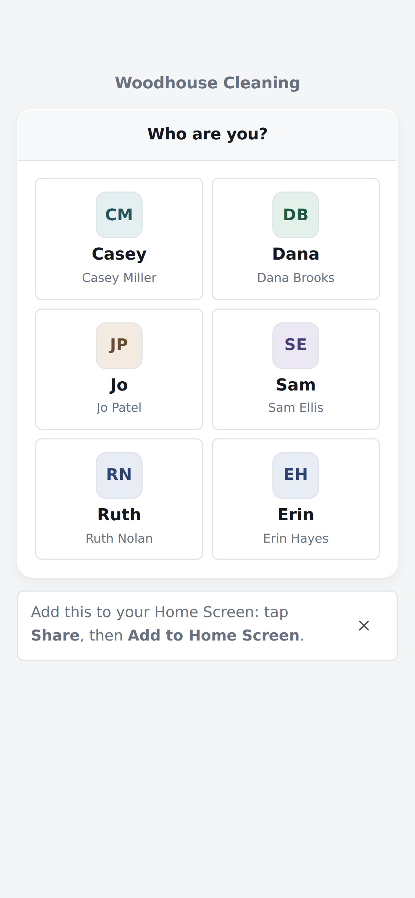
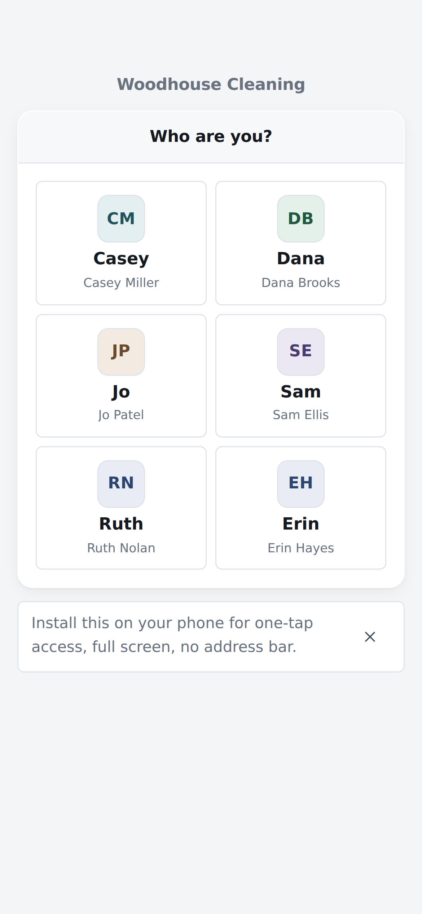
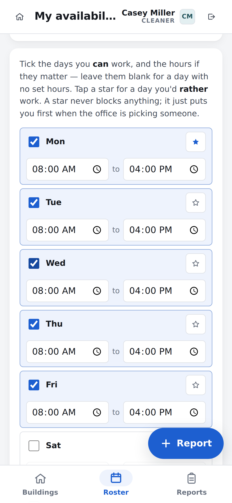

Logging in
- Open the app on your phone.
- Tap your name.
- Tap your PIN. The last number logs you in.


You only do this once. The app remembers you next time.
Woodhouse Basecamp
How to use it
It tells you what to clean today, and it tells the office when you have finished.
The app is at:
What is in here
Office0402 930 714
Maintenance0437 316 386
You only do this once. The app remembers you next time.


You only do this once. The app then has its own icon, like any other app, and you never have to find the link again.

Check means a quick tidy and re-stock. Full Clean means the whole clean. A green Done means someone has already finished that building. The arrows at the top show another day, and every other building is under Other buildings at the bottom.


There is nothing to tick and nothing to hand in. Tapped it by mistake? Open the building again and tap Reopen.

Use it for lost property too. The office sees it straight away. You do not have to wait for an answer.

The office writes the roster. If a shift looks wrong, ring them. A week that is not out yet will say so instead of showing you a half-finished one.

Tap the star on a day you would rather work. Use Save for this week only if it is a one-off. Saving does not move a shift you already have, so ring the office if one needs to change.
Office0402 930 714
Maintenance0437 316 386